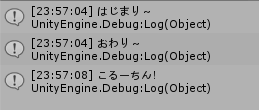
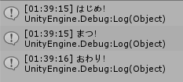
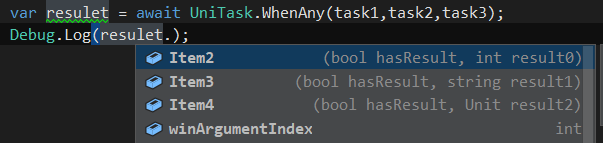
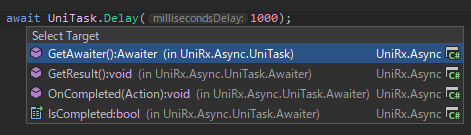
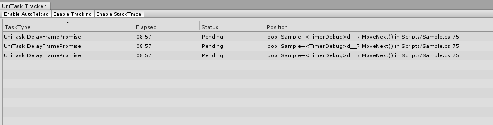
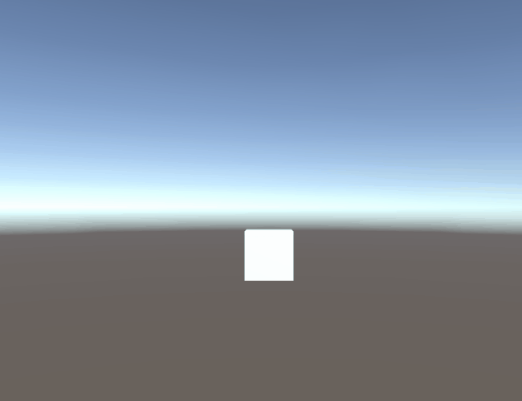

みなさんメリークリスマス！
Unityでasync/awaitやってますか？やってない？
そんなあなたにUniTask！
(初っ端から2日間、プログラム班以外興味がない記事を書いてしまいます申し訳ありません。。。)
HN: すいま
所属班: プログラム班
回生: 3回生
Twitter: @SuimezZZ
主にUnityやC#を触って結構慣れてきた人向けです。
async/awaitの説明は軽くしかしないので少し理解してる人が読むといいかと思います。
ところどころ難しポイントはあるのでそういうとこは読み飛ばしちゃってください。
全然わっかんねぇって人は、将来UniTaskを勉強したくなったらこの記事を見返してみてください。
ネット上にUniTaskの情報は結構乗ってますが、この記事でUniTaskという存在そのものを知るきっかけになってくれたら良いかなと思います。
リファレンス的な記事なので良かったら何度も読み返してみてください。
『Unityでasync/awaitを最高のパフォーマンスで実現するライブラリ』 (公式より引用)
UniTaskは2019年12月1日現在、まだAssetStoreに公開されていないのでgithubから入手します。
昔はUniRxの一部だったので名前空間が今でもUniRx.Asyncという歴史的経緯があります。
UniTaskはC#7の機能に依存しています。
ではUnityのどのバージョンから使えるんだ？ってことで対応表を作ってみました。
| Unityのバージョン | C#のバージョン |
|---|---|
| 2017.4.x | 6.0 |
| 2018.2.x | 6.0 |
| 2018.3.x | 7.3 |
| 2018.4.x | 7.3 |
| 2019.x | 7.3 |
対応表を見ると、C#7以上に対応しているのは、Unity2018.3以上です。
Incremental Compilerを導入すれば2018.2からでも使えますが、よっぽどの理由がない限り使わなくていいです。まあ今は2018.2以下を使っている人はあまりいないと思うので問題ないですかね。
なに言ってんだ？
とりあえず次のコードを見てみましょう
Debug.Log("はじまり～");
StartCoroutine(TimerDebug("こるーちん！",3)); //3秒後に出力
Debug.Log("おわり～");
IEnumerator TimerDebug(object obj,float time){
yield return new WaitForSeconds(time);
Debug.Log(obj);
}よくあるコルーチンのコードですね。では出力結果はどうなるでしょうか？

あれ？プログラムの順番は「はじまり～」→「こるーちん！」→「おわり～」なのに、順番が変わりました。
この例では
StartCoroutine(TimerDebug("こるーちん！",3));この関数の結果を待たずに次の行の処理が行われているのです。要するに、通常通り逐次実行されるものと、コルーチンを実行するもの、二手に分かれています。
これが非同期処理です。
な～んだもうみんなやってたんだ。
読んで字のごとく、非同期を待つ。です。
さっきはコルーチンを待たずに2手に分岐して処理を行いました。
async/awaitでは、非同期メソッドがその結果を得るまで待つことができます。
難しいですが、あとでちゃんと解説します。
private async Task HogeAsync(){ //メソッド宣言時にasync修飾子をつける
Debug.Log("まつ！");
await Task.Delay(1000); //1000ミリ秒待つ
}
await HogeAsync(); //使うときはawaitをつける先ほどの例でだしたやつです。IEnumeratorを返り値とし、yieldなんちゃらを使うやつです。
大体はStartCoroutineで起動します。その場合GemeObjectと結びついていて扱いやすいですが、返り値を返すことができないというデメリットも抱えています。
try-catchブロック内では、yieldを使いことができないため、例外処理も困難です。
一応これらの問題は引数にデリゲートを渡すことで解消できますが冗長になってしまいがちです。
これつかってる人いるの…？
void HogeMethod(){
Debug.Log("ほげほげ");
}
Invoke(nameof(HogeMethod),3); //3秒後に出力コルーチンのStartCoroutine同様、メソッドを遅延起動させるメソッドです。手軽っちゃ手軽。
返り値を返せないし引数を渡すこともできません。
C#標準の機能です。
Unityでも使えます。
非同期処理向けライブラリです。イベント処理のイメージが強い印象です。
そして今回紹介するのがこのUniTask
UniTask ＋ async/await で何でもできます。
var result = await HogeUniTaskAsync();
//ちゃんとメインスレッドに戻ってくる
Debug.Log(result);こんな感じですかね。基本はC#のTaskが優秀で、それとほぼほぼ同じく使えるのが強いポイントかと。
じゃあUniTaskじゃなくてTaskで良くない？ってことで違いをまとめてみました
| Task | UniTask | |
|---|---|---|
| 機能 | Unityで使うには 不要な機能が多い |
Unity用に最適化 |
| サイズ | Unityで使うには 無駄が多い |
コンパクト |
| 最低C# バージョン |
5.0 | 7.0 |
| await中のタスク | 見れない | 見れる |
こんな感じでしょうか。
C#のTaskにはUnityで使うにはいらない機能が多いようです。
UniTaskはその不要な機能をカットしたコンパクトなものになっています。
また、グラフでは省きましたが、依存しているものの違いもあります。
UniTaskはUnityのPlayerLoopを使っています。そのためUnityとの親和性が高いです。
TaskとTask<T>をUnity向けに最適化したものです。
基本的にTaskをUniTaskに書き換えるだけでUniTaskを使うことができます。
// Task
private async Task HogeAsync(){
Debug.Log("まつ！");
await Task.Delay(1000);
}
// UniTask
private async UniTask HogeAsync(){
Debug.Log("まつ！");
await Task.Delay(1000); //Taskは自動でUniTaskに変換されて返される
}返り値をUniTaskに変えただけです。すごい！
呼び出すときはこんな感じ
private async void Start(){
Debug.Log("はじめ！");
await HogeAsync();
Debug.Log("おわり！");
}
ちゃんと1秒待ってからメインに戻ってきてくれました。
これが非同期を待つって感じです。便利ですね。
ジェネリックでも同じです。
private async UniTask<int> SumAsync(int num1,int num2){
return await UniTask.Run(() => num1 + num2);
}CompletionSourceからの生成も同様にTaskをUniTaskに書き換えるだけで使えます。
var taskCompletionSource = new TaskCompletionSource<int>(); // Task
var uniTaskCompletionSource = new UniTaskCompletionSource(); // UniTaskasync/awaitには fire and forget という概念があります。
投げっぱなしってことですね。 async void 関数がそれにあたります。
ですがこれだと通常のTaskで動いてしまうのでUniTaskにはUniTaskVoid構造体が用意されています。
async void HogeTaskAsync(){ //これだとTaskで動いちゃう
Debug.Log("ほげ");
}
async UniTaskVoid HogeUniTaskAsync(){ //UniTaskで動かす場合はこう
Debug.Log("ほげ");
}UniTaskが提供する静的メソッドの中から一部を紹介します。
Task.Delayとほぼ同じ。
引数で指定した秒数分待機できます。
これは、後に紹介するものも同様に、時間やフレームで待機するメソッドは、引数にUnityのどのタイミングで計測するか(デフォルトはUpdate())を指定できます。便利。
ここがTaskと違うところですね。
// FixedUpdateのタイミングで10秒待つ
await UniTask.Delay(1000, delayTiming : PlayerLoopTiming.FixedUpdate);UniTask.Delayのフレーム待機版です。
指定したフレーム数待機できます。
// FixedUpdateのタイミングで10フレーム待つ
await UniTask.DelayFrame(10,PlayerLoopTiming.FixedUpdate);指定したタイミングで1フレーム待機できます。
コルーチンの yield return null に近いです。
// Updateのタイミングで1フレーム待機する
await UniTask.Yield();
// 次のFixedUpdateのタイミングまで待機する
await UniTask.Yield(PlayerLoopTiming.FixedUpdate);ここで注意？というか良いところと言いますか。
// 次のFixedUpdateのタイミングまで待機する
await UniTask.Yield(PlayerLoopTiming.FixedUpdate);これを実行した次の行からFixeUpdateのタイミングで処理が走るという特性があります。
// 次のFixedUpdateのタイミングまで待機する
await UniTask.Yield(PlayerLoopTiming.FixedUpdate);
// ここからFixedUpdateのタイミングで実行される
Debug.Log("ほげ")
Debug.Log("ふが")Updateのタイミングに戻したいときは
// 1フレーム待ってからUpdate()のタイミングに戻る
await UniTask.Yield();
//この行以降はUpdateのタイミング
Debug.Log("ぴよ")これでUpdateのタイミングに戻ります。
await UniTask.SwitchToThreadPool();このメソッドにより、実行コンテキストをスレッドプールに変更できます。
それを戻すのにもUniTask.Yieldを使うこともできます。
しかしUniTask.SwitchToMainThreadというメソッドもあります。
読んで字のごとくメインスレッドにコンテキストを変更するメソッドです。
では何が違うのでしょうか？次のコードを見てください。
// 現在のコンテキストに関わらず1フレーム待ってからメインスレッドに変更する
await UniTask.Yield();
// 現在メインスレッドにいるなら何もせず通過する
await UniTask.SwitchToMainThread();この二つのメソッド、こんな感じで若干の違いがあります。注意しましょう～
Task.Runと同じです。
同期処理をまとめて別スレッドで実行します。
async UniTask<string> HogeUniTaskAsync(string str1, string str2){
return await UniTask.Run( () => str1 + str2 );
}しかし、別スレッド上では実行できないメソッドというものが存在します。注意しましょう。
async UniTask HogeUniTaskAsync(GameObject obj){
return await UniTask.Run( () => Instantiate(obj)); //Instantiateはメインスレッドでしか使えない
}指定した全てのUniTaskが完了するまで待機できます。
UniTaskの型引数が異なる型でもOKです。
var task1 = UniTask.DelayFrame(10); // int型
var task2 = UniTask.Run(() => "完了！"); // string型
//結果をタプルで受け取れる
var (re1, re2) = await UniTask.WhenAll(task1, task2);
Debug.Log(re1); // 10
Debug.Log(re2); // 完了！指定したUniTaskのどれかが1つが完了するまで待機できます。
どれか1つのUniTaskが完了すると、他の待機中のUniTaskはキャンセルされます。
var task1 = UniTask.DelayFrame(10);
var task2 = UniTask.Run(() => "完了！");
var task3 = subject.ToUniTask();
await UniTask.WhenAny(task1, task2, task3);
Debug.Log("どれかが完了！");そして、どのUniTaskが完了したのかを、インデックスで取得することができます。

winArgumentIndexが完了したUniTaskのインデックスです。
さらに、型引数が全て一致しているなら、どのUniTaskが完了したのかをオブジェクトで直接取得できます。
foreach(var player in players){
var task = UniTask.WaitUntil(() => player.transform.position.y > 30) //ゴール
.ContinueWith(() => player.Name);
playersTasks.Add(task);
}
var (_,p) = await UniTask.WhenAny(playersTasks.ToArray());
Debug.Log(p); // 一番最初にゴールしたプレイヤーの名前指定した条件がtrueになるまで待機できます。
await UniTask.WaitUntil(() => isStart); // ゲームが始まるとtrueになるフラグ
Debug.Log("ゲーム開始！");指定した条件がfalseになるまで待機できます。
await UniTask.WaitWhile(() => hp > 0); // hpが0未満になると完了する
Debug.Log("負け……");UniRxのObserveEveryValueChangedと同じ
await UniTask.WaitUntilValueChanged(this.transform, x => x.position.y);
Debug.Log("縦に動いた！");UniTaskをコルーチンに変換するメソッドです。
インスタンスメソッドにも同じものがあります。
書き心地的にこっちはあまり使わない印象です。まとめて複数のUniTaskをコルーチンに変換する場合はこっちを使うといいかもしれません。
IEnumerator HogeCoroutine(){
yield return UniTask.ToCoroutine(() => HogeUniTaskAsync());
}Awaiterとは何かを説明します。
まず復習。
さっきからさんざん使ってきた非同期メソッド。
asyncという修飾子を付けることでメソッドは非同期メソッドになります。
UniTask HogeMethod(){ //これは同期メソッド
//.....
async UniTask HogeAsyncMethod(){ //これは非同期メソッド
//....
asyncをつけた非同期メソッドはこのように待機できます
await HogeAsyncHethod();じゃあawaitって何を元に待機してるの？
その答えがAwaiterです。
あるオブジェクトにGetAwaiterメソッドが実装されていて、そこからAwaiterが取得できればコンパイラはawaitできると判断します。
ちなみに拡張メソッドでも可です。すなわち、既存のクラスを自分で拡張してawaitできるようにできるってわけです。
おまけ(DOTweenをawaitできるようにしよう！) で解説しています。
プログラム中のawaitの実装に飛ぼうとすると、どのようにawaitされているかを見ることができます。

UniTaskには、この機能を利用してUnity機能の様々なAwaiterが用意されています。
UniTaskを入れていると、コルーチンもawaitできます。
UniTaskは使いたいけどあのコルーチンメソッド書き直すの嫌だな～って思ったら、そのままawaitをつければいいので便利です。
await TimerDebug("１回目", 1); //1秒待ってからログ
await TimerDebug("2回目", 3); //3秒待ってからログ
await TimerDebug("3回目", 2); //2秒待ってからログ
IEnumerator TimerDebug(object obj,float time){
yield return new WaitForSeconds(time);
Debug.Log(obj);
}上記のようにStartCoroutineを使わなくてもコルーチンが起動できます。
下記のコードとの違いがわかりますか？
StartCoroutine(TimerDebug("１回目", 1));
StartCoroutine(TimerDebug("2回目", 3));
StartCoroutine(TimerDebug("3回目", 2));// ボタンクリックを待機する
await button.OnClickAsync();
// スライダーの値変更を待機する
await slider.OnValueChangedAsync();
// インプットの編集終了を待機する
await inputField.OnEndEditAsync();
// トグルの変更を待機する
await toggle.OnValueChangedAsync();await SceneManager.LoadSceneAsync("HogeScene"); //Sceneの非同期読み込みを待機する
await Resources.LoadAsync<AudioClip>("SE/jump");
await SceneManager.LoadSceneAsync("HogeScene") //Progressから進行状況が取れる
.ConfigureAwait(Progress.Create<float>(n => {
Debug.Log($"現在{n * 100}%");
}));// Awakeを待機
await this.AwakeAsync();
// Startを待機
await this.StartAsync();
// OnDestroyを待機
await this.OnDestroyAsync();
// OnCollisionEnterを待機
await this.GetAsyncCollisionTrigger().OnCollisionEnterAsync();
// OnEnableを待機
await this.GetAsyncEnableDisableTrigger().OnEnableAsync();ToCoroutineメソッド
IEnumerator TimerDebug(object obj,float time){
// UniTaskをコルーチンに変換して待機
yield return UniTask.Delay(TimeSpan.FromMilliseconds(time)).ToCoroutine();
Debug.Log(obj);
}// コルーチンをUniTaskに変換して待機(この場合はToUniTaskは省略できる)
await TimerDebug("１回目", 1).ToUniTask();var subject = Observable.Timer(TimeSpan.FromSeconds(10)); // 10秒待つストリーム
// IObservableをUniTaskに変換
var task = subject.ToUniTask();無限に続くIObserbavleからの変換に注意しましょう。一生完了しないUniTaskを作ってしまいます。
var task = UniTask.Delay(1000);
// UniTaskをIObservableに変換
var subject = task.ToObservable();IObservableもawaitすることができます。
これはUniTaskの機能ではないのですが紹介しておきます。
var timerSubject = Observable.Timer(TimeSpan.FromSeconds(1));
await timerSubject;
Debug.Log("時間経過した！");しかし、これだとTaskでawaitしてしまうので、UniTaskでawaitする場合はToUniTaskメソッドを使ってawaitすると良いと思います。
await Observable.Timer(TimeSpan.FromSeconds(1)).ToUniTask();
Debug.Log("時間経過した！");これはUnityエディター上でawaitを可視化できる機能です。
どこのUniTaskがawaitしてるのかや、状態も確認等ができます。
リークしてないか確認するのに便利ですね。

非同期処理はキャンセルのことを考えなければいけません。
なにかの理由でいらなくなったときにそれを捨てることをしないといけないのです。
それがまぁちょっとめんどくさいですが、大事なことなので紹介します。
TaskではCancellationTokenを使ってキャンセルを通知します。
UniTaskでも同じものを使います。UniTaskだからと言ってそういうのも全部勝手にやってくれる！ってわけではありません。
作り方
CancellationTokenSource source = new CancellationTokenSource();
CancellationToken token = source.Token;はい。
CancellationTokenSourceからCancellationTokenを取得します。
ちょっとめんどくさいですね。
そしてCancellationTokenSourceのCancelメソッドによってキャンセルを通知することができます。
source.Cancel(); // キャンセル状態にするif(token.IsCancellationRequested){ //キャンセルされているとtrueになる
Debug.Log("キャンセルされてる！");
}
// キャンセルされていたらOperationCanceledExceptionを投げるというのを1行で書ける
token.ThrowIfCancellationRequested();UniTaskのメソッドには大体CancellationTokenを指定できます。
なので、めんどくさがらずやってください。
// オーバーロードでCancellationTokenを指定できる
await UniTask.Delay(1000, cancellationToken:token);
await button.OnClickAsync(token);TimeCountAsync(token).Forget();
async UniTaskVoid TimeCountAsync(CancellationToken token){
var count = 0;
while(true){
await UniTask.DelayFrame(60,cancellationToken:token);
Debug.Log(++count + "秒");
}
}UniTask.RunはCancellationTokenを指定できないのでラムダ式外のCancellationTokenをキャプチャする必要があります。
async UniTask SaveAsync(CancellationToken token){
await UniTask.Run(() => {
// キャンセル確認
token.ThrowIfCancellationRequested();
// 重い同期処理。
HeavyMethod();
// 終わった後もキャンセル確認
token.ThrowIfCancellationRequested();
});
}
await SaveAsync("Resources\data.json", token);MonoBehaviourを使う場合はGetCancellationTokenOnDestroyを使うといいかと思います。
var token = this.GetCancellationTokenOnDestroy();CancellationTokenをGetCancellationTokenOnDestroy()により生成することで、GameObjectが削除されると自動でキャンセル状態にしてくれます。
OperationCanceledExceptionを投げられたUniTaskはキャンセル状態になります。
エラーログには出ませんが、それを良いことに自分で投げるのはやめましょう。
CancellationTokenはメソッドにどんどん受け渡ししていくものです。
必ずCancelメソッド経由で伝播されたキャンセル要求を見るようにしましょう。
// ダメな例
async UniTask<float> SaveAsync(string path,CancellationToken token){
return await UniTask.Run(() => {
// ファイルが存在しないなら例外を吐く
if(!File.Exists(path)) throw new OperationCanceledException();よっぽどの理由がない限りTaskではなくUniTaskを使う
イベントや結果が複数になるときにはObservableを使う
結果が1つのときはUniTaskを使う
Observableで書いてて、コールバック地獄になりそうなら手続き型で書けるUniTaskを使う
UniRxはイベントと非同期の役割がありますが、非同期はUniTask一本でも良さそうです。
処理にもよるけど使いやすい方を使いましょう！
UniTaskが使い慣れたらコルーチンはいらなくなります。
こっちも使いやすい方を選択しましょう。
何度か言いますが、コルーチンやInvokeといった、他の非同期処理がいらなくなります。
StartCoroutineもInvokeもMonoBehaviourのメンバなため、MonoBehaviourでないと使えないという制約があります。
そういった制約もUniTaskならありません。
しかし、完全な上位互換とはいかず、結構キャンセルが面倒という問題もあります。
コルーチンはゲームオブジェクトがDestroyしたら勝手に消えてくれましたが、UniTaskはそうはいきません。
ですが、使いこなせば想像以上のパフォーマンスを見せてくれると思います。
めちゃくちゃ便利なのでとりあえず使ってみましょう！
UniTaskはTaskをUnity用に最適化、使いやすくなったつよつよライブラリ！
キャンセルしっかりやる！
UniTaskとasync/awaitでなんでもできるようになる！
おまけとしていろいろなAwaiterで紹介したことを踏まえて、DOTweenをawaitできるようにしようと思います。
DOTweenとは、名前の通りtween系ライブラリです。結構使いやすいです。
AssetStore から無料でダウンロードできます。
そもそもAwaitableってなにをもってしたらAwatableなの？
Interfaceも実装しなくていいの？
↓
その通り
↓
ということは型で判断してるのではない？
↓
そういうこと
↓
じゃあどうやるの？
ということで説明します。
// Awaitableオブジェクトの例
public class HogeAwaitable{
public HogeAwaiter GetAwaiter(){
return new HogeAwaiter(this);
}
}これはインスタンスメソッドでも拡張メソッドでも大丈夫です。
// Awaiterの例
public struct HogeAwaiter : INotifyCompletion {
public void OnCompleted(Action continuation){} // INotifyCompletionで実装される
public bool IsCompleted{get;}
public void GetResult(){}
}AwaiterがINotifyCompletionを実装する以外、「○○という名前の～～を持つ」という条件になってます。このように、型ではなく名前で処理を振り分けることをダックタイピングと言います。
public interface IAwaiter : ICriticalNotifyCompletion{
bool IsCompleted{get;}
void GetResult();
}※補足
今回はGetResultの返り値はvoidですが、返り血が欲しい場合は以下のようにしましょう
public interface IAwaiter<out T> : IAwaiter{
new T GetResult();
}ちなみに両方ともUniTaskの実装とほぼ一緒です。
DOTweenAsyncExtentionクラスを定義する
public static class DOTweenAsyncExtention{}DOTweenAsyncExtentionクラスにメンバを追加します。
TweenAwaiter構造体
struct TweenAwaiter : IAwaiter{
Tween tween;
public TweenAwaiter(Tween tween) => this.tween = tween;
public void OnCompleted(Action continuation){
UnsafeOnCompleted(continuation);
}
// ICriticalNotifyCompletionにより実装されたメソッド
// OnCompletedと同じような意味合い
// awaitが展開されるとコールバックが登録される
public void UnsafeOnCompleted(Action continuation){
tween.OnKill(() => {
continuation();
});
}
// tweenが終わったらtrue
public bool IsCompleted => tween.IsComplete();
public void GetResult(){}
}GetAwaiterメソッド
// Awaiterを返すGetAwaiter
public static IAwaiter GetAwaiter(this Tween self){
return new TweenAwaiter(self);
}デモということでキャンセル対応はしてないですが許してください……
コードと実行結果はこんな感じです。
private async void Start(){
await transform.DOMove(new Vector3(-3, 3, 0), 1); // 動く
await transform.DOScale(new Vector3(0.5f, 2, 1), 2); // 大きさ変える
await transform.DORotate(new Vector3(180, 90, 0), 3); // 回る
}
記事を読んでくれてありがとうございました。
どうもこんにちは、3回生P班のすいまと申します。
UniTaskの記事を書いてみましたが、どうでしたか？
興味を持ってくれたらとても嬉しいです。
この記事はほんっっっっとにごくごく一部の人しか読んでくれないんだろうなぁっていう前提で書いています。
そもそもUniTaskっていう名前も知らない、名前は知ってるけどどういうものか知らない、async/awaitって怖い。みたいな人たちに刺さるような内容になったと思います。
最初から何を言ってるのか何もわからない！っていう人は、後々UniTaskに興味を持ったりしたときに再び読んでじわじわと取得してくれたら幸いです。
紹介しきれなかった機能もありますので、これを機に調べてみてはいかがでしょうか。
私自身まだ習熟していなく、わからないこともいっぱいあります。ということで勉強がてら記事を書いてみました。
Twitter等での質問も遠慮なくお願いします。
間違っていることがあれば優しく教えてくれるとありがたいです。
この記事を作成するにあたり、さまざまな記事を参考にさせていただきました。感謝します。参考って言うかパクｒ
UniTask入門(https://speakerdeck.com/torisoup/unitaskru-men)
UniTask - Unityでasync/awaitを最高のパフォーマンスで実現するライブラリ(http://tech.cygames.co.jp/archives/3256/)
neue cc - UniTask - Unity + async/awaitの完全でハイパフォーマンスな統合(http://neue.cc/2018/07/12_567.html)
Observableで非同期処理(https://www.slideshare.net/torisoup/observable)
非同期メソッドの内部実装(https://ufcpp.net/study/csharp/sp5_awaitable.html)